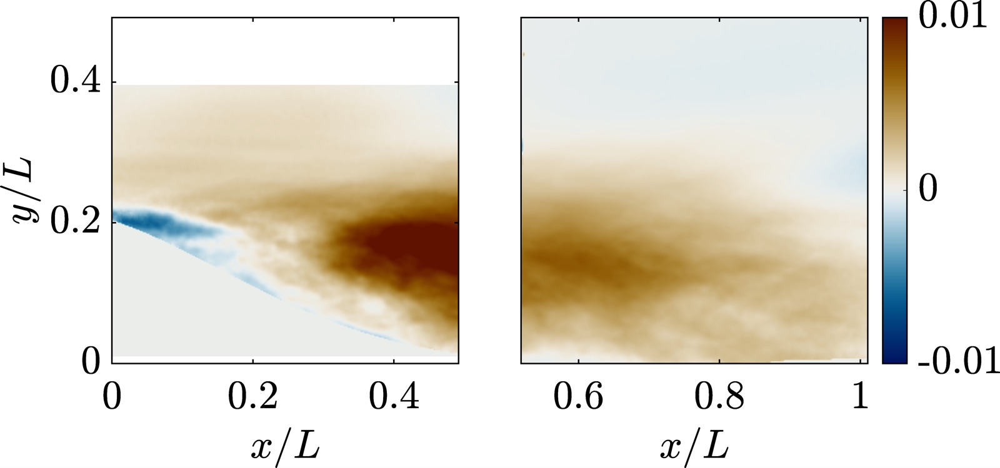
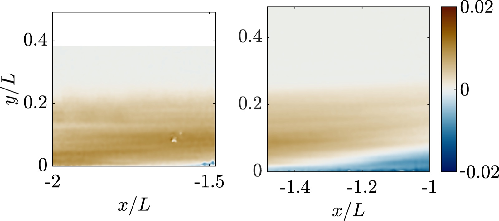

Intrinsic phase-based POD (IPhaB POD)
Many flows have a dominant large-scale cycle that isn't perfectly periodic. IPhaB POD extracts that intrinsic phase from the data and decomposes the flow relative to it, which gives modes that show how structures interact over the cycle. We demonstrated it on the pulsating shock system over a spike-tipped cylinder, then used it to study how coherent structures in turbulent boundary layers interact with separation.

POD for aero-optic distortion
Density fluctuations in turbulent boundary layers distort laser beams and optical sensors that look through them. Using conditional snapshot POD and space-time POD, I identified the velocity features associated with large aero-optic distortion events.
